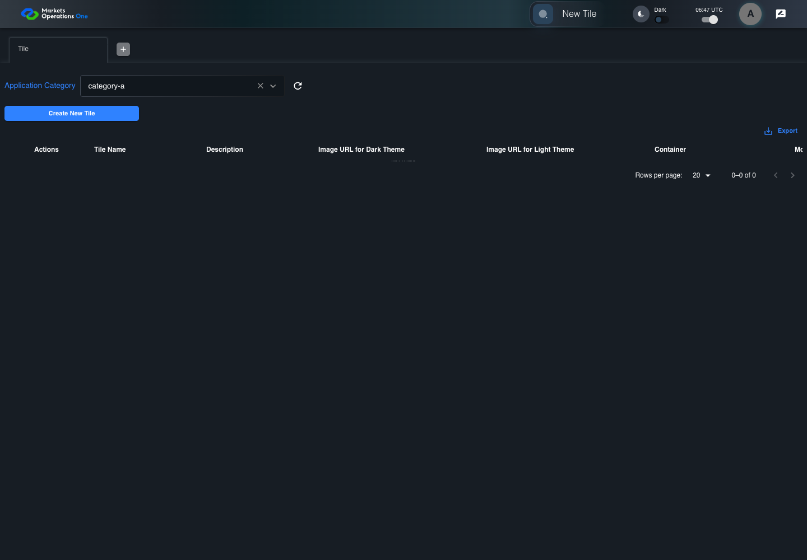
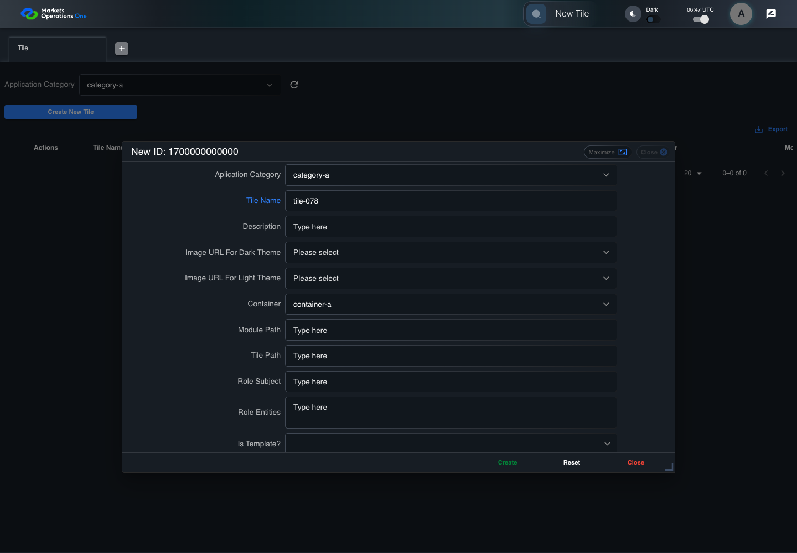
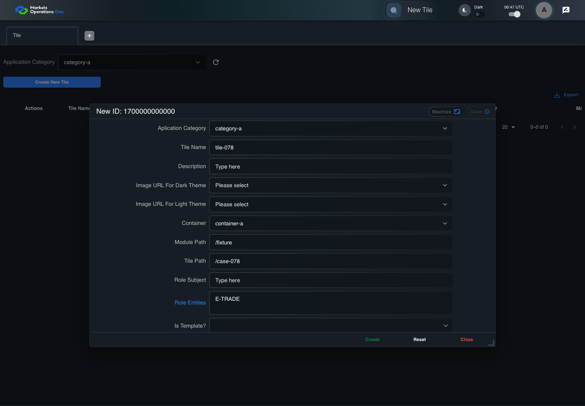
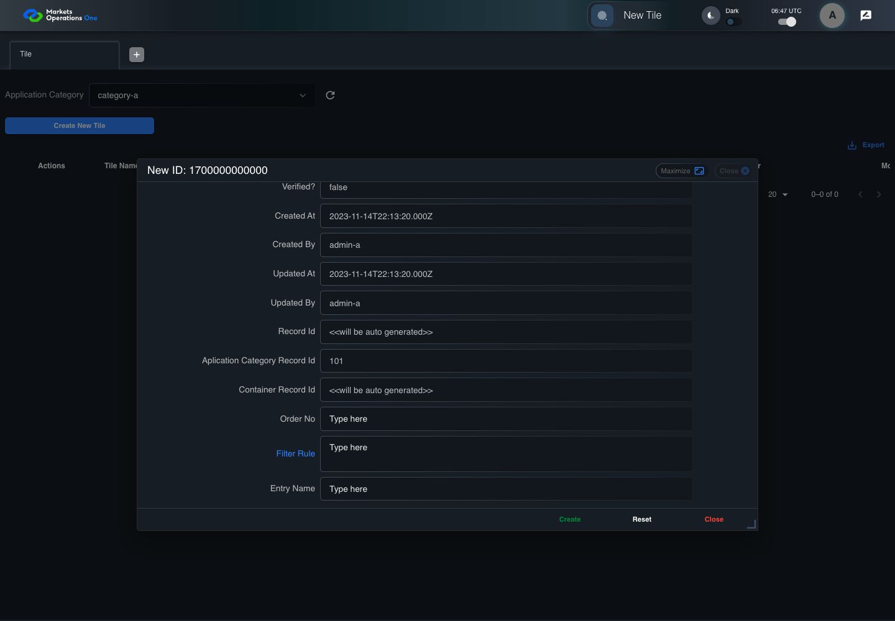
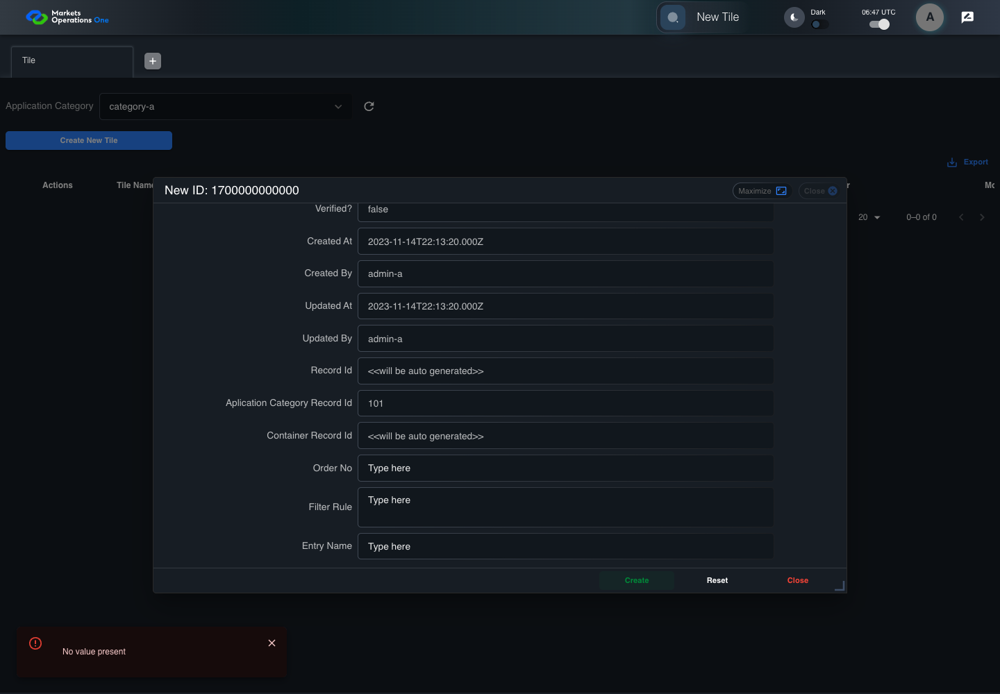

BFF-ADM-078 current BFF administration through actual UI
PASS · application/run-072/bff-adm-078-current-bff-administration-through-actual-ui-7146412ed617-attempt-1 · ACTUAL_APPLICATION_LOCAL_SERVICES
Actual current React and exact-current BFF admin controllers/services/JPA with actual migration DDL in disposable PostgreSQL. Controlled OUD/EMS2 identities and local Spring bootstrap. Fixture SQL seeds/mutates isolated records; service errors are actual database errors. Undefined agreed messages remain unresolved acceptance.
2026-10-22T06:47:20.452Z to 2026-10-22T06:47:31.254Z
Assertions and result · Artifact manifest · Exact run inputs and source hashes
Result SHA-256:248f3b244cc041e3694311ba30dcda8c6396471f217edaec3950defef7c6a544Machine observations
- actual-identity-projection.json
c11fdae97e58834c31bf6e5a0adf8cf56955d0c9204d17958bd3b75343705ef5 - baseline-inputs.json
abcb23418283387dad55796ac1182fcc10f5a47f9ca8b11ef52847e05359bea9 - bff-boundary.json
6247d18f42e579a6a4793057ebac7db494267e86e7541221a57b6b4b89675837 - committed-ui-submission-comparisons.json
f4d000ecabb2b994f678974cc4dac5ac91fc288002598db168e389afd68c4182 - creation-clock.json
51f2f891b93417de0b53e0760869dc7d3af2bce09227f1a15206ba5275511841 - empty-filter-rule-representation.json
7ff21f52cf88df871be101c78df79567ad4eed308cd858feb3aab5bd7e3e591b - fixture-step-10.json
eb3cc532d176b132042ca4d2cb8b05c5c08214f9302a17a73dbcbd8a5fab65a6 - fixture-step-11.json
35edd9fcb1b3aa7961cb3f68abed9ef638f2512651fb01c552c57778cd1cf4e5 - fixture-step-6.json
6f9d7236930ba9b148bf1f4b7481415590be8ab11906ef32cf8430241265aff4 - fixture-step-7.json
5db4ca4e464b29ef06a51968cea522cf9f3eabc35b5a781cddc769906308bcc5 - fixture-step-8.json
9a71fae229a78212b085373790fae554126e4c746380df607bd052863d73ba7d - fixture-step-9.json
4e06786f302abeb04737974159b9f316b99273901fd578e19f9bb13311ecbd86 - initial-persisted-records.json
379ac5ca0e5db4de07b6b6afd0ca501d0d8a3c3eac852c2ff77837ab20c95be8 - persisted-after-submit.json
e03a1da5c3e684d469b408f65f6b1ea5352f51d1b532611ef05367a077a2b7a7 - reference-snapshot-3.json
4784e87ca902c48274575ca05f7bbffc56808c3f274cd8ed61cf503dc4aa65d1 - reference-snapshot-4.json
add2d6a55a5b8a70489ebf033bd05960e001e8b250c15cdec6e2270678774e86 - rejection-or-policy-observation.json
d2f0c022033e2feeeb3d4b1f5c22e0b7b9ba7cb35c635a4c471a54116009cbc7 - ui-origin-bff-requests.json
fdb6830d18380ce166d9735af0f64dc8d559014ca05de46e5a7e173ffe5f5078
Screenshot capture: CAPTURED. Named frames: 26.
Step screenshot evidence: COMPLETE. 25/25 canonical steps have execution screenshots.
Canonical step timeline
Given Admin A uses subject "admin-a" with role "FMO_ADMIN" in an isolated authenticated browser
Execution: PASSED.
1. step-01 Visible state after step 1: Given Admin A uses subject "admin-a" with role "FMO_ADMIN" in an isolated authenticated browser
2026-10-22T06:47:24.415Z · 1440×1000
Step: /Users/lushevol/code/github/ratan-release-impact/workbench/tasks/ui-test-coverage-20261022/test-cases.md:17996
SHA-256:afe46f84e26724a41a8e12d5613de56d06b9ee1c33246eda228316c09a1a19b5And the controlled Tile fixture records the initial grid rows and persisted values
Execution: PASSED.
2. step-02 Visible state after step 2: And the controlled Tile fixture records the initial grid rows and persisted values
2026-10-22T06:47:24.610Z · 1440×1000
Step: /Users/lushevol/code/github/ratan-release-impact/workbench/tasks/ui-test-coverage-20261022/test-cases.md:17997
SHA-256:fe37ef92c19bcb1c80987be8f9321bec6fdba4203e13e855254d263b4637bbddAnd Category 101 has label "category-a" and Import Map 201 has Module Name "container-a"
Execution: PASSED.
3. step-03 Visible state after step 3: And Category 101 has label "category-a" and Import Map 201 has Module Name "container-a"
2026-10-22T06:47:24.710Z · 1440×1000
Step: /Users/lushevol/code/github/ratan-release-impact/workbench/tasks/ui-test-coverage-20261022/test-cases.md:17998
SHA-256:f65b69f1400326c123519fdcd1562a74442275ef8f4ffa75f2b4ac20b6702bffAnd both references belong to "FMO_ADMIN" and the Tile page category filter value is Category 101
Execution: PASSED.
4. step-04 Visible state after step 4: And both references belong to "FMO_ADMIN" and the Tile page category filter value is Category 101
2026-10-22T06:47:24.793Z · 1440×1000
Step: /Users/lushevol/code/github/ratan-release-impact/workbench/tasks/ui-test-coverage-20261022/test-cases.md:17999
SHA-256:6f3aaad36e46a2d286ec2ff043828635d8a1000a63f0eb891f8799f5292ddb4cAnd the controlled creation clock returns 1700000000000 milliseconds
Execution: PASSED.
5. step-05 Visible state after step 5: And the controlled creation clock returns 1700000000000 milliseconds
2026-10-22T06:47:24.869Z · 1440×1000
Step: /Users/lushevol/code/github/ratan-release-impact/workbench/tasks/ui-test-coverage-20261022/test-cases.md:18000
SHA-256:2cab3ed06b641096637954f54492a71b50c0edc853a44cb12681c1a3dcb2ba79And the baseline fixture data defines "Tile Name" as "tile-078"
Execution: PASSED.
6. step-06 Visible state after step 6: And the baseline fixture data defines "Tile Name" as "tile-078"
2026-10-22T06:47:24.938Z · 1440×1000
Step: /Users/lushevol/code/github/ratan-release-impact/workbench/tasks/ui-test-coverage-20261022/test-cases.md:18001
SHA-256:104b12b9f174baca31e176e8bbd77af297a5585a0b4ce5498291a5fde01f51e5And the baseline fixture data defines "Module Path" as "/fixture"
Execution: PASSED.
7. step-07 Visible state after step 7: And the baseline fixture data defines "Module Path" as "/fixture"
2026-10-22T06:47:25.020Z · 1440×1000
Step: /Users/lushevol/code/github/ratan-release-impact/workbench/tasks/ui-test-coverage-20261022/test-cases.md:18002
SHA-256:b42e7e2d3f3f2a90c7f503c1242612b2ec0919bf557c4517be4216991020989bAnd the baseline fixture data defines "Tile Path" as "/case-078"
Execution: PASSED.
8. step-08 Visible state after step 8: And the baseline fixture data defines "Tile Path" as "/case-078"
2026-10-22T06:47:25.085Z · 1440×1000
Step: /Users/lushevol/code/github/ratan-release-impact/workbench/tasks/ui-test-coverage-20261022/test-cases.md:18003
SHA-256:8a3c69de9618caf9e6ac35c7a878923559692121b8706c7b1c48d3915557e683And the baseline fixture data defines "Role Entities" as "E-TRADE"
Execution: PASSED.
9. step-09 Visible state after step 9: And the baseline fixture data defines "Role Entities" as "E-TRADE"
2026-10-22T06:47:25.151Z · 1440×1000
Step: /Users/lushevol/code/github/ratan-release-impact/workbench/tasks/ui-test-coverage-20261022/test-cases.md:18004
SHA-256:188ae042e7e675f17b3d31014a96123fc15d139d254636b52a2d9ea1cc9633c8And the baseline fixture data defines "Filter Rule" as ""
Execution: PASSED.10. step-10 Visible state after step 10: And the baseline fixture data defines "Filter Rule" as ""
2026-10-22T06:47:25.222Z · 1440×1000
Step: /Users/lushevol/code/github/ratan-release-impact/workbench/tasks/ui-test-coverage-20261022/test-cases.md:18005
SHA-256:fa6a42a48bf2e732dcac7a57a8af691c23babbe0151f26b93e5b1ff00dadac84And the baseline Tile references use "Aplication Category" "category-a" and "Container" "container-a"
Execution: PASSED.11. step-11 Visible state after step 11: And the baseline Tile references use "Aplication Category" "category-a" and "Container" "container-a"
2026-10-22T06:47:25.306Z · 1440×1000
Step: /Users/lushevol/code/github/ratan-release-impact/workbench/tasks/ui-test-coverage-20261022/test-cases.md:18006
SHA-256:58c880a460653be00334de2c94696d9dda73bbc3df03b2aefaca46a1db5a6fedWhen Admin A clicks the button labeled "Create New Tile" on the Tile administration page
Execution: PASSED.
12. step-12 Visible state after step 12: When Admin A clicks the button labeled "Create New Tile" on the Tile administration page
2026-10-22T06:47:25.741Z · 1440×1000
Step: /Users/lushevol/code/github/ratan-release-impact/workbench/tasks/ui-test-coverage-20261022/test-cases.md:18007
SHA-256:a0f2050b9ca0c437a43c2bf4940e5c860f01a7f7cf2bfc0da1edff74c37b6005Then the dialog titled "new ID: 1700000000000" is visible on the Tile administration page
Execution: PASSED.
13. step-13 Visible state after step 13: Then the dialog titled "new ID: 1700000000000" is visible on the Tile administration page
2026-10-22T06:47:26.236Z · 1440×1000
Step: /Users/lushevol/code/github/ratan-release-impact/workbench/tasks/ui-test-coverage-20261022/test-cases.md:18008
SHA-256:d624a817aead89171f823f1ad116593e3e1d4e01c0a72b5d9b14bb01ee99f27cWhen the controlled database event removes Category 101 before submission
Execution: PASSED.14. step-14 Visible state after step 14: When the controlled database event removes Category 101 before submission
2026-10-22T06:47:26.492Z · 1440×1000
Step: /Users/lushevol/code/github/ratan-release-impact/workbench/tasks/ui-test-coverage-20261022/test-cases.md:18009
SHA-256:48e0b25077acd24e717e630190b4085597587c3d7fa9ec1707e34df652de9c47And Admin A clicks the combobox labeled "Container" in dialog "new ID: 1700000000000"
Execution: PASSED.
15. step-15 Visible state after step 15: And Admin A clicks the combobox labeled "Container" in dialog "new ID: 1700000000000"
2026-10-22T06:47:26.658Z · 1440×1000
Step: /Users/lushevol/code/github/ratan-release-impact/workbench/tasks/ui-test-coverage-20261022/test-cases.md:18010
SHA-256:b3bd83cb8789c6dd745fae4a61a58cfce0a486593d01bcabb34bf2636958aa38And Admin A clicks the option labeled "container-a" in the expanded "Container" listbox for dialog "new ID: 1700000000000"
Execution: PASSED.16. step-16 Visible state after step 16: And Admin A clicks the option labeled "container-a" in the expanded "Container" listbox for dialog "new ID: 1700000000000"
2026-10-22T06:47:27.197Z · 1440×1000
Step: /Users/lushevol/code/github/ratan-release-impact/workbench/tasks/ui-test-coverage-20261022/test-cases.md:18011
SHA-256:c2ff6d7321cb5e5c9b39128ae8f9de17aabc9bab4847fd499651b682e5c8335cAnd Admin A fills the textbox labeled "Tile Name" with "tile-078" in dialog "new ID: 1700000000000"
Execution: PASSED.
17. step-17 Visible state after step 17: And Admin A fills the textbox labeled "Tile Name" with "tile-078" in dialog "new ID: 1700000000000"
2026-10-22T06:47:27.633Z · 1440×1000
Step: /Users/lushevol/code/github/ratan-release-impact/workbench/tasks/ui-test-coverage-20261022/test-cases.md:18012
SHA-256:1650f9a5d8bcc9692a933488270415b57276d0d4e46362c8fe32a2e93518fc48And Admin A fills the textbox labeled "Module Path" with "/fixture" in dialog "new ID: 1700000000000"
Execution: PASSED.18. step-18 Visible state after step 18: And Admin A fills the textbox labeled "Module Path" with "/fixture" in dialog "new ID: 1700000000000"
2026-10-22T06:47:28.106Z · 1440×1000
Step: /Users/lushevol/code/github/ratan-release-impact/workbench/tasks/ui-test-coverage-20261022/test-cases.md:18013
SHA-256:c98760d4426c62319acba4755e39662add7096e6c8e2ab0762d9a527d57eeafbAnd Admin A fills the textbox labeled "Tile Path" with "/case-078" in dialog "new ID: 1700000000000"
Execution: PASSED.19. step-19 Visible state after step 19: And Admin A fills the textbox labeled "Tile Path" with "/case-078" in dialog "new ID: 1700000000000"
2026-10-22T06:47:28.776Z · 1440×1000
Step: /Users/lushevol/code/github/ratan-release-impact/workbench/tasks/ui-test-coverage-20261022/test-cases.md:18014
SHA-256:c0683fa7a55d1ac68fb19e5648befd6fd2c882e0e758bed215b3d8fb2b534429And Admin A fills the textarea labeled "Role Entities" with "E-TRADE" in dialog "new ID: 1700000000000"
Execution: PASSED.
20. step-20 Visible state after step 20: And Admin A fills the textarea labeled "Role Entities" with "E-TRADE" in dialog "new ID: 1700000000000"
2026-10-22T06:47:29.259Z · 1440×1000
Step: /Users/lushevol/code/github/ratan-release-impact/workbench/tasks/ui-test-coverage-20261022/test-cases.md:18015
SHA-256:8572707f94fc34440eac20403a1c28df162915d7902ddd556b0af245ffd2e738And Admin A fills the textarea labeled "Filter Rule" with "" in dialog "new ID: 1700000000000"
Execution: PASSED.
21. step-21 Visible state after step 21: And Admin A fills the textarea labeled "Filter Rule" with "" in dialog "new ID: 1700000000000"
2026-10-22T06:47:29.707Z · 1440×1000
Step: /Users/lushevol/code/github/ratan-release-impact/workbench/tasks/ui-test-coverage-20261022/test-cases.md:18016
SHA-256:9fce3118495113ad6b1e1176061e9870eaa54437d702f615d39e4465fc0a9901And Admin A clicks the button labeled "Create" in dialog "new ID: 1700000000000"
Execution: PASSED.
22. step-22 Visible state after step 22: And Admin A clicks the button labeled "Create" in dialog "new ID: 1700000000000"
2026-10-22T06:47:30.009Z · 1440×1000
Step: /Users/lushevol/code/github/ratan-release-impact/workbench/tasks/ui-test-coverage-20261022/test-cases.md:18017
SHA-256:66a6ea7a9833a51e98264f147f25567475f6ecc99f52fbd12a1f0af4b6862b2dThen the alert with severity "error" in the portal snackbar displays the captured rejection response message
Execution: PASSED.23. step-23 Visible state after step 23: Then the alert with severity "error" in the portal snackbar displays the captured rejection response message
2026-10-22T06:47:30.099Z · 1440×1000
Step: /Users/lushevol/code/github/ratan-release-impact/workbench/tasks/ui-test-coverage-20261022/test-cases.md:18018
SHA-256:09054f991af7c9a3a53a10fab5e5aedcadf106257662cdd8af1f2b237bf7bb87And the dialog titled "new ID: 1700000000000" remains visible on the Tile administration page
Execution: PASSED.24. step-24 Visible state after step 24: And the dialog titled "new ID: 1700000000000" remains visible on the Tile administration page
2026-10-22T06:47:30.182Z · 1440×1000
Step: /Users/lushevol/code/github/ratan-release-impact/workbench/tasks/ui-test-coverage-20261022/test-cases.md:18019
SHA-256:9603c13185f17f60ada8863957652abc07c44d2312d6a22c01a356e9f27c1aafAnd the Tile data grid with column "Record Id" row identifiers and loaded field values equal the initial grid snapshot on the Tile administration page
Execution: PASSED.25. step-25 Visible state after step 25: And the Tile data grid with column "Record Id" row identifiers and loaded field values equal the initial grid snapshot on the Tile administration page
2026-10-22T06:47:30.347Z · 1440×1000
Step: /Users/lushevol/code/github/ratan-release-impact/workbench/tasks/ui-test-coverage-20261022/test-cases.md:18020
SHA-256:a6f94cef9925ea94ab59a1a4f0f219f71f38dfb11cb26958fa432340e922313e
Additional named frames
Screenshots establish visible state only. Assertions and traces support functional claims.